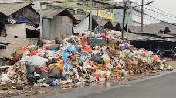

📖 Latar Belakang
Permasalahan sampah plastik di Indonesia semakin mengkhawatirkan. Setiap tahunnya, jutaan ton sampah plastik berakhir di lautan, mencemari ekosistem, dan membahayakan kehidupan makhluk laut. Sayangnya, sebagian besar dari sampah ini terbuang begitu saja tanpa dimanfaatkan kembali. Kami percaya bahwa masalah ini bukan hanya tanggung jawab pemerintah, tetapi juga tanggung jawab kita semua.
🎯 Visi LOOPA
Menciptakan ekonomi sirkular yang berkelanjutan dengan mengubah sampah plastik menjadi produk berkualitas tinggi yang bermanfaat bagi masyarakat dan planet kita. Kami ingin membuktikan bahwa "sampah" adalah hanya masalah perspektif — dengan pendekatan yang tepat, sampah dapat menjadi sumber daya berharga.
